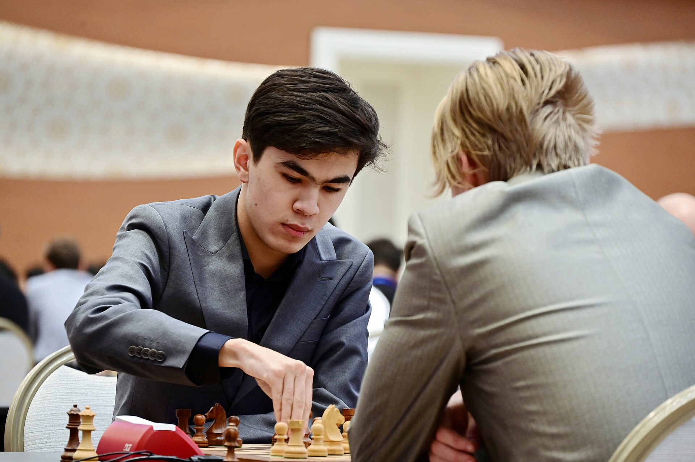

Javokhir Sindarov Outscores Carlsen and Nepomniachtchi at the Global Chess League
At the tournament held in Bengaluru from Sept. 5 to 13, the Uzbek grandmaster scored the most points on the Icon board. His team finished third overall.

At the Global Chess League tournament held in the Indian city of Bengaluru from Sept. 5 to 13, Uzbek grandmaster Javokhir Sindarov scored the most game points on the Icon board — the teams' first board.
On this measure he finished ahead of rivals including Magnus Carlsen and Ian Nepomniachtchi. It was Sindarov's debut on the first board: in previous seasons he had competed in the Prodigy and Superstar categories.
The team result
Sindarov competed for the FYERS American Gambits. In the final tournament table, the Ganges Grandmasters took first place, the Alpine APL Pipers second and Sindarov's team third.
On the fifth day of the tournament, Sindarov beat Alireza Firouzja and took his team into the lead.
- Tournament: Tech Mahindra Global Chess League 2026
- Dates: Sept. 5–13
- Location: Bengaluru, India
- Sindarov's team: FYERS American Gambits (3rd place)
- Individual result: best score on the Icon board
What the Global Chess League is
The Global Chess League is an international chess league in a team format. Each team includes boards of different categories, and the final result is calculated on team points. The league has been held since 2023.
The tournament format differs from classical team competitions: men and women play on the same team, and points for wins and draws are awarded under a separate system.
Uzbek chess
Uzbek chess has produced notable results at the international level in recent years. The country's men's national team won gold at the 2022 Chess Olympiad; Sindarov played on that squad.
In September 2026, Uzbekistan is hosting the largest international event in chess: the Chess Olympiad is being held in Samarkand with close to 400 teams and nearly 2,000 players. It is the largest Olympiad in history.
About Sindarov
Javokhir Sindarov was born in 2005. He earned the grandmaster title at the age of 12 years and 10 months, placing him at the time among the five youngest grandmasters in history.
In recent seasons he has competed regularly in international tournaments and has reached ratings close to the world's top ten.
For the diaspora
The name American Gambits belongs to one of the league's franchises and competes under a brand associated with the United States. For Uzbek communities in America, Sindarov's playing on that squad was one of the factors that increased interest in the tournament.
The league format
The Global Chess League was established in 2023 and is held in partnership between the International Chess Federation (FIDE) and an Indian technology company. The competition is organized in a team format.
Each team has six players divided into separate categories: Icon (first board), Superstar, Prodigy and women's boards. This structure brings experienced grandmasters, young players and women players together on one team.
The points system also differs from classical chess: a win with the black pieces earns more points than a win with white. This rule was introduced to encourage players to play more actively.
How the tournament went
The tournament was held from Sept. 5 to 13 in the city of Bengaluru. On the fifth day, Sindarov beat Alireza Firouzja and took his team into the lead.
In the final table, the Ganges Grandmasters took first place, the Alpine APL Pipers second and the FYERS American Gambits, for whom Sindarov played, third.
On individual performance, Sindarov scored the most game points on the first board, finishing ahead of rivals including Magnus Carlsen and Ian Nepomniachtchi in that category.
Sindarov's career
Javokhir Sindarov was born in 2005. He earned the grandmaster title at the age of 12 years and 10 months, placing him at the time among the five youngest grandmasters in history.
Uzbekistan's men's national team won gold at the 2022 Chess Olympiad; Sindarov played on that squad. That result is considered one of the greatest achievements in the country's chess history.
In recent seasons he has competed regularly in international tournaments and has reached ratings close to the world's top ten.
The Uzbek chess school
Chess is among the sports supported at the state level in Uzbekistan. A network of youth academies operates in the country, and financial support is allocated for competing in international tournaments.
Players such as Rustam Kasimdzhanov, Nodirbek Abdusattorov and Javokhir Sindarov are the country's representatives at the international level.
In September 2026, Uzbekistan hosted the largest international event in chess: a Chess Olympiad with close to 400 teams was organized in Samarkand. The competition brought together 208 open and 192 women's teams.
India and chess
India, where the tournament was held, has become one of the leading chess countries in recent years. The number of grandmasters in the country is growing rapidly and young players are posting strong results in international tournaments.
Bengaluru is considered India's technology hub and is chosen as a venue for major sporting and intellectual events.
For the diaspora
The team Sindarov played for competed under a brand associated with the United States. For Uzbek communities in America, this was one of the factors that increased interest in the tournament.
The tournament's results and game records have been published in open sources — including on the Chess.com platform and the league's official site.
The link to the Samarkand Olympiad
The Global Chess League tournament concluded two days before the Chess Olympiad in Samarkand. For many leading players, the two competitions came back to back, raising the question of physical and psychological strain.
Such density in the chess calendar has become common in recent years: the number of tournaments has grown and the time allotted for preparation has shrunk.
The rating system
In chess, players' strength is measured through the Elo rating. After each game, the rating changes depending on the opponent's strength and the result.
Team league tournaments are generally played at rapid time controls, so they may not affect classical ratings directly. The tournament's main value is seen in competitive experience and spectator interest.
Chess and the economy
Chess has expanded its audience in recent years thanks to online platforms. This in turn has driven growth in the sponsorship and broadcasting market.
The Global Chess League is a commercial project built on precisely this trend: teams are organized on a franchise model and have their own individual brands.
For Central Asian states, participation in such tournaments is also seen as an instrument of sports diplomacy.
The tournament's participants
Leading figures of world chess were invited to the tournament. Among them were former world champion Magnus Carlsen, Ian Nepomniachtchi, Alireza Firouzja and India's Viswanathan Anand.
Such a lineup is the main appeal of the team league format: opponents who rarely meet in classical individual tournaments come up against each other in a single competition.
For Sindarov, debuting on the first board marks a new stage in his career — opponents' ratings are highest in that category.
The tournament's results and game records have been published in open sources — including on Chess.com and the league's official site.